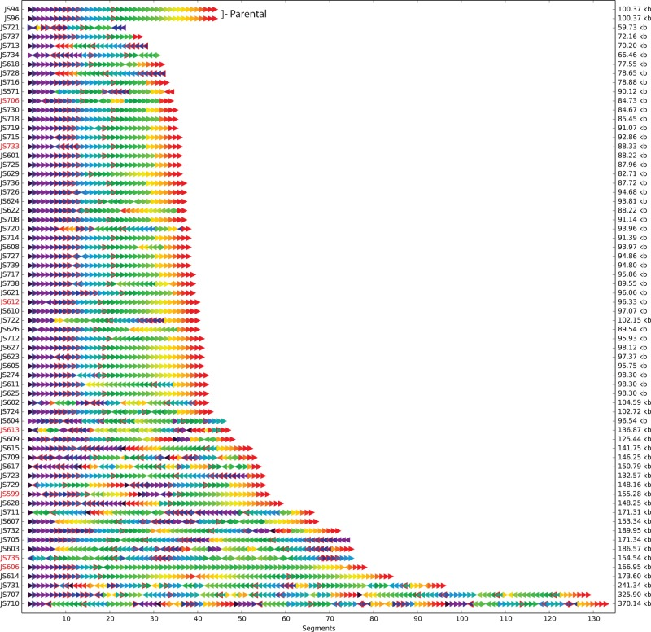

Deciphering complex phenotypes with multiomic quantitative traits, SCRaMbLEd genomes, and longitudinal profiling
Dynamic
Environment-dependent
Three snapshots
- Multiomic QTLs Yeast
- SCRaMbLEd genomes Synthetic Yeast
- Longitudinal profiling with wearables Humans
Multiomic QTLs
16 out of 26 metabolites different in parental strains
mQTL hotspot on Chr13
Genes with strong trans-Chr13 eQTL enriched for amino acid biosynthetic processes?
SCRaMbLEd genomes

Synthetic Chromosome Recombination and Modification by LoxP-mediated Evolution (SCRaMbLE)
Can transcript isoforms explain SCRaMbLE phenotypes?

Short reads cannot always reassemble SCRaMbLEd genomes
Long-read sequencing to reassemble SCRaMbLEd genomes
JS94 SynIXR (un)SCRaMbLEd sequence: 91,010 bp
PacBio: 99% identity, contig size of: 86,574 bp
MinION: 98% identity, contig size: 89,292 bp
Andreas Johansson and Felix Wertek
Longitudinal profiling with wearable technologies
- 500,000 people, 40-69 years old in 2006-2010
- Many phenotypes including physical exam, nutrition, blood, urine, saliva
- Activity monitor for 20,000 (100,000 by Q1 2016)